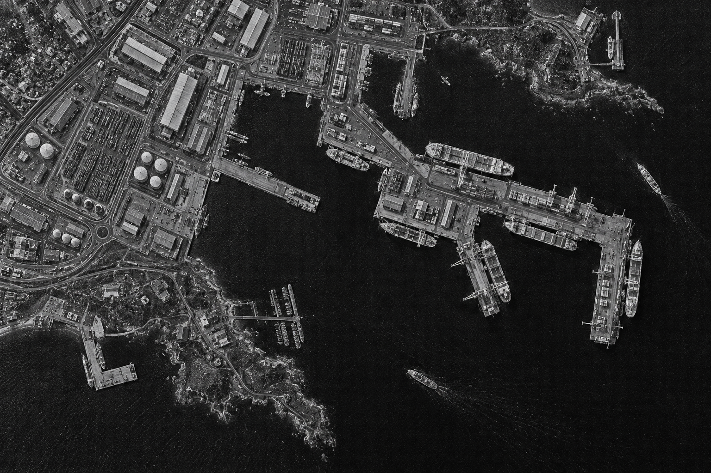

Busenur Arlı
Research team
TED UNIVERSITY · CMPE491 · 2026–27
KESKİN investigates how super-resolution techniques affect object detection in SAR imagery. We aim to evaluate changes in image quality alongside detection performance.

01 / RESEARCH QUESTION
This question is at the centre of our research. We plan to compare super-resolution methods applied to low-resolution SAR imagery and examine how changes in image quality translate into object detection performance.
Illustrative imagery; not actual SAR data or a model output.
02 / RESEARCH APPROACH
Review HRSID and SSDD as candidate datasets; prepare low- and high-resolution image pairs using the selected data.
Compare at least two deep learning super-resolution architectures. Evaluate EDSR and SRGAN as candidates through the feasibility study.
Evaluate object detection on low-resolution and super-resolved images, examining how image processing affects the detection task.
Evaluate image quality and object detection with separate measures; report the observed differences, limitations and potential gains together.
03 / EXPLORE THE APPROACH
This is an illustrative demonstration of the approach. The images and detection boxes are not actual model outputs or experimental results.
TWO PERSPECTIVES
Using the evaluation protocol defined in the specifications, we will examine changes in detail and structure in super-resolution outputs against reference images and quality measures.
We plan to compare different image inputs within the same evaluation setup to examine changes in finding and locating objects.
The evaluation protocol is defined. No experimental results have been published yet.
04 / NEW QUESTIONS
Two example situations we would like to examine in our experiments. These are research questions, not observed model failures.
These scenarios are illustrative; they do not represent the measured performance of an existing model.
05 / Roadmap
The project proposal and specifications have been completed and submitted. They define the research scope and evaluation protocol.
Next is a small feasibility pilot with the candidate datasets and models, followed by the analysis report. This work will inform the final dataset, super-resolution models and object detector.
The methods will be implemented and their effects on image quality and object detection compared.
Results, limitations and project outputs will be documented and shared on this page.
06 / PROJECT ARCHIVE
The project proposal, specifications and Backlog v1.0 are available here. Each published version will be preserved in this archive.
Last updated ·
07 / Team
Research team
Research team
Research team
08 / Questions
The research idea, where we are today, and how to follow the work.
Super-resolution aims to produce a higher-resolution image from a low-resolution input. Object detection aims to find and locate objects in an image. KESKİN investigates how the first process contributes to the second task.
The project proposal and specifications have been completed and submitted. The evaluation protocol is defined; HRSID and SSDD are candidate datasets, and EDSR and SRGAN are candidate super-resolution models. The final selections and object detector are still undecided. Next are the feasibility pilot and analysis report; no experimental results have been published.
PDF versions of the project proposal, specifications and Backlog v1.0 are available in the Documents section. New documents and later versions will be published here with their dates and version numbers; earlier versions will remain accessible.